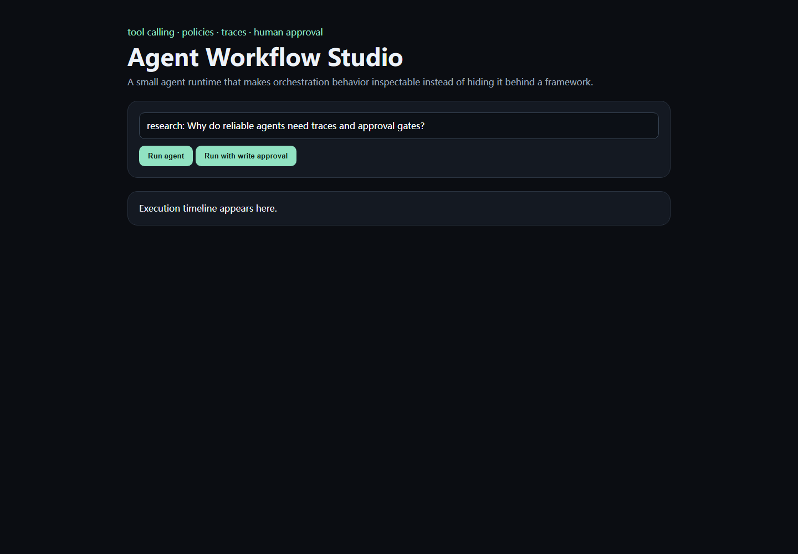

Applied AI Case Study · 2026
Agent Workflow Studio
A framework-light tool-using agent runtime designed around the engineering details that matter after the demo: policies, approvals, retries, budgets and traces.

“The agent called a tool” is not enough to debug or trust the workflow.
The runtime makes policy decisions visible. A tool has an explicit risk class, each execution creates a trace span, and workflows can pause before actions that belong behind human approval.
Offline deterministic planning keeps the orchestration contract testable without pretending the project is a fully autonomous production agent.
goal→planner→budget→policy gate→tool→traceTools publish a name, purpose and risk class; arithmetic uses a restricted AST evaluator instead of unsafe eval.
The research workflow pauses before a side-effect-class draft step unless approval is explicitly provided.
SQLite spans record inputs, outputs, latency, errors and status so execution can be inspected after the run.
Agent orchestration before agent hype.
The project focuses on runtime primitives rather than claiming autonomous capability. The deterministic planner is intentionally replaceable by an LLM planner later.
The architecture is informed by public workflow/agent patterns documented in the LangGraph ecosystem, while the implementation and UI are independent.